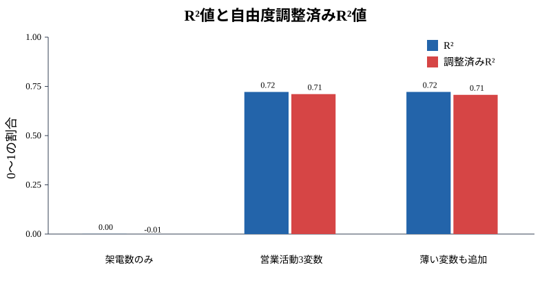
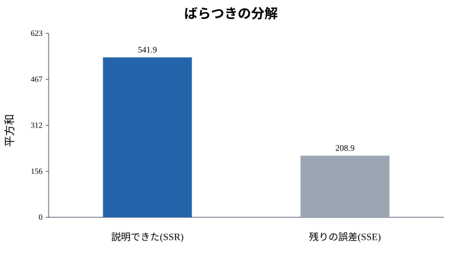

5. モデルの説明力を読む: R²値と自由度調整済みR²値
この資料で学ぶこと
回帰分析をすると、結果に R-squared や Adjusted R-squared が出てきます。
日本語では、
- R²値: 決定係数
- 自由度調整済みR²値: 調整済み決定係数
と呼びます。
この資料では、営業活動と契約数の例を使って、次のことを理解します。
- R²値は何を表しているのか
- R²値が高ければ良いモデルと言い切れるのか
- なぜ自由度調整済みR²値が必要なのか
A. 理論理解と説明
R²値とは
R²値は、ざっくりいうと、
目的変数のばらつきのうち、モデルで説明できた割合です。
営業の例なら、契約数は人によってばらつきます。ある人は2件、ある人は8件かもしれません。
このばらつきのうち、架電数、商談数、提案書提出数でどれくらい説明できたかを表すのがR²値です。
たとえば、
R² = 0.72なら、「契約数のばらつきの約72%をモデルで説明できた」と読みます。
ばらつきの分解
R²値の裏側には、ばらつきの分解があります。
全体のばらつき = モデルで説明できたばらつき + 説明できなかったばらつき記号では、よく次のように書きます。
SST = SSR + SSESST: 全体のばらつきSSR: モデルで説明できたばらつきSSE: 残差、つまり説明できなかったばらつき
R²値は次の形で考えられます。
R² = SSR / SSTまたは、
R² = 1 - SSE / SSTです。
R²値の注意点
R²値が高いほど、データへの当てはまりは良いです。
しかし、R²値が高いからといって、必ず良いモデルとは限りません。
理由は主に3つあります。
- 説明変数を増やすと、R²値は下がりにくい
- 実務的に意味のない変数でも、少しR²値を上げることがある
- 過去データに合いすぎて、新しいデータに弱くなることがある
この「変数を増やすだけでよく見えてしまう問題」に対応するのが、自由度調整済みR²値です。
自由度調整済みR²値とは
自由度調整済みR²値は、説明変数の数を考慮したR²値です。
説明変数を増やしても、モデルの改善が小さい場合は、調整済みR²値はあまり上がりません。場合によっては下がります。
つまり、自由度調整済みR²値は、
説明変数を増やした分、本当に見合う改善があったかを見るための指標です。
B. 実践: Rによるモデル構築
営業活動データを作ります。
set.seed(123)
n <- 80
calls <- runif(n, 40, 180)
meetings <- runif(n, 5, 35)
proposals <- runif(n, 1, 18)
random_noise <- rnorm(n)
contracts <- 0.5 +
0.01 * calls +
0.18 * meetings +
0.45 * proposals +
rnorm(n, 0, 1.5)
sales <- data.frame(contracts, calls, meetings, proposals, random_noise)モデルを3つ作って比較します。
model_1 <- lm(contracts ~ calls, data = sales)
model_2 <- lm(contracts ~ calls + meetings + proposals, data = sales)
model_3 <- lm(contracts ~ calls + meetings + proposals + random_noise, data = sales)
summary(model_1)
summary(model_2)
summary(model_3)R²値と自由度調整済みR²値だけを取り出すなら、次のように書けます。
r2_table <- data.frame(
model = c("架電数のみ", "営業活動3変数", "意味の薄い変数も追加"),
r_squared = c(summary(model_1)$r.squared,
summary(model_2)$r.squared,
summary(model_3)$r.squared),
adjusted_r_squared = c(summary(model_1)$adj.r.squared,
summary(model_2)$adj.r.squared,
summary(model_3)$adj.r.squared)
)
r2_tableC. シミュレーションと可視化
R²値と調整済みR²値を比べる
モデルごとのR²値を棒グラフにします。
barplot(t(as.matrix(r2_table[, c("r_squared", "adjusted_r_squared")])),
beside = TRUE,
names.arg = r2_table$model,
col = c("steelblue", "tomato"),
ylim = c(0, 1),
ylab = "値",
main = "R²値と自由度調整済みR²値")
legend("topleft",
legend = c("R²", "調整済みR²"),
fill = c("steelblue", "tomato"),
bty = "n")
図1: モデルごとのR²値と自由度調整済みR²値。縦軸は0から1までの割合で、1に近いほどデータへの当てはまりが強いことを表します。
R²値は、説明変数を増やすと上がりやすいです。一方、調整済みR²値は、意味の薄い変数を追加しても素直には上がりません。
全体のばらつきを分解して見る
次の図は、契約数のばらつきを「モデルで説明できた部分」と「説明できなかった部分」に分けたものです。
y <- sales$contracts
y_hat <- fitted(model_2)
sst <- sum((y - mean(y))^2)
sse <- sum((y - y_hat)^2)
ssr <- sum((y_hat - mean(y))^2)
barplot(c(SSR = ssr, SSE = sse),
col = c("steelblue", "gray"),
main = "ばらつきの分解",
ylab = "平方和")
図2: 契約数のばらつきの分解。青はモデルで説明できたばらつき、灰色はまだ説明できずに残った誤差です。
R²値は、このうち「モデルで説明できた部分」が全体に占める割合です。
まとめ: この資料のオチ
R²値は、モデルの説明力を知るための便利な指標です。
ただし、R²値だけでモデルの良し悪しを決めるのは危険です。説明変数を増やすだけでR²値は上がりやすいからです。
この資料の結論は次の通りです。
- R²値は「目的変数のばらつきをどれくらい説明できたか」
- 自由度調整済みR²値は「変数を増やした分のコストも考えた説明力」
- 実務では、R²値、調整済みR²値、残差分析、解釈しやすさをセットで見る
ゴールは、数字を大きくすることではありません。新しいデータにも使えそうで、現場の判断に役立つモデルを選ぶことです。
Check
まとめテスト
自由度調整済みR²値が必要になる理由はどれですか？
R²は説明変数を追加すると下がりにくいため、変数を増やしたコストも考える調整済みR²が役立ちます。